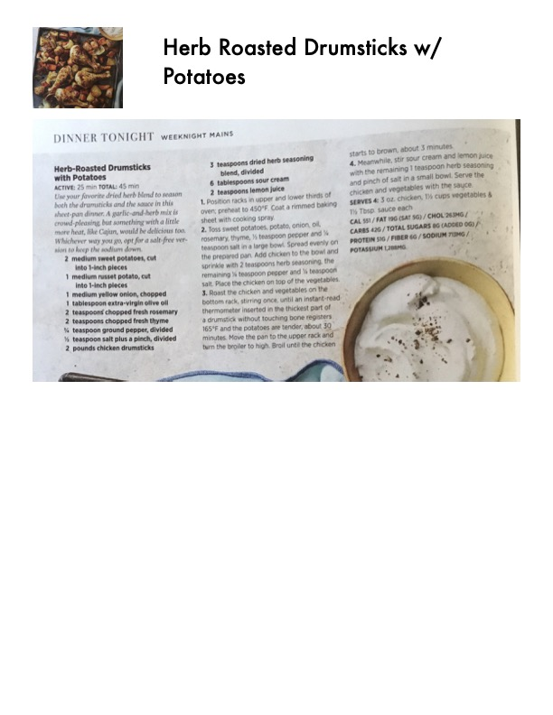

Herb-Roasted Drumsticks with Potatoes

Original cookbook page 62
Use your favorite dried herb blend to season both the drumsticks and the sauce in this sheet-pan dinner. A garlic-and-herb mix is crowd-pleasing, but something with a little more heat, like Cajun, would be delicious too. Whichever way you go, opt for a salt-free version to keep the sodium down.
Total: 45 min
Ingredients
- 2 medium sweet potatoes, cut into 1-inch pieces
- 1 medium russet potato, cut into 1-inch pieces
- 1 medium yellow onion, chopped
- 1 tablespoon extra-virgin olive oil
- 2 teaspoons chopped fresh rosemary
- 2 teaspoons chopped fresh thyme
- ½ teaspoon ground pepper, divided
- 1 teaspoon salt plus a pinch, divided
- 2 pounds chicken drumsticks
- 3 teaspoons dried herb seasoning blend, divided
- 6 tablespoons sour cream
- 2 teaspoons lemon juice
Instructions
- Position racks in upper and lower thirds of oven; preheat to 450°F. Coat a rimmed baking sheet with cooking spray.
- Toss sweet potatoes, potato, onion, oil, rosemary, thyme, ½ teaspoon pepper and ½ teaspoon salt in a large bowl. Spread evenly on the prepared pan. Add chicken to the bowl and sprinkle with 2 teaspoons herb seasoning, the remaining ½ teaspoon pepper and ½ teaspoon salt. Place the chicken on top of the vegetables.
- Roast the chicken and vegetables on the bottom rack, stirring once, until an instant-read thermometer inserted in the thickest part of a drumstick without touching bone registers 165°F and the potatoes are tender, about 30 minutes. Move the pan to the upper rack and turn the broiler to high. Broil until the chicken starts to brown, about 3 minutes.
- Meanwhile, stir sour cream and lemon juice with the remaining 1 teaspoon herb seasoning and pinch of salt in a small bowl. Serve the chicken and vegetables with the sauce.
Recipe #62 from collection